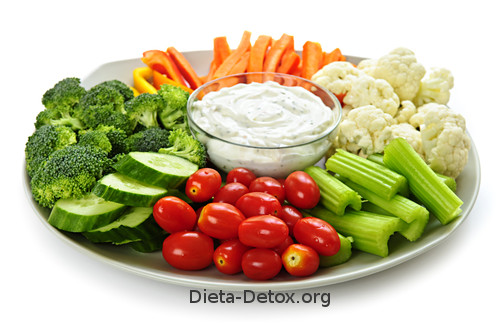
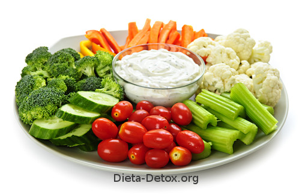

Mundo Detox
Un exterior saludable inicia desde el interior
Favoritos:
 

Jugo verde de repollo, limón y pepino
29 de Noviembre 2018
Sin duda los jugos verdes son nutritivos, deliciosos y fáciles de preparar. Si has sentido que estás bajo de energía, esta bebida te recargará, además, de que al mismo tiempo te ayudará a eliminar toxinas.
Ingredientes:
- 1 hoja de repollo;
- Jugo de 1/2 limón;
- 1/3 de pepino sin cáscara;
- 1 manzana roja sin cáscara;
- 150 ml de agua de coco.
Modo de preparación:
Licuar todos los ingredientes, colar y beber. Es preferible tomarlo sin añadirle azúcar o edulcorantes.

JuanPedro: Excelente publicación! Lo voy a intentar.

Lucrecia_: Lo intenté! Es riquísimo! Gracias. :)
Samantha17: Podrías subir otras combinaciones, por favor? Este me quedó super.
Pechuga de pavo al horno
15 de Ostubre 2018
Ingredientes:
- 2 pechugas de pavo;
- 300 g de zanahorias;
- 200 g de patatas;
- 2 naranjas;
- 1 cucharada de pimienta negra en grano;
- Aceite de oliva;
- 3 clavos de especia;
- Perejil;
- 4 ajos;
- Sal.
Modo de preparación:
Precalentar el horno a 180 grados. Hacer jugo de las naranjas. En un almirez, poner la pimienta en grano, un poco de sal, los clavos y un ajo pelado. Machacar bien e ir añadiendo poco a poco cuatro cucharadas de aceite de oliva.
Mover hasta conseguir una mezcla homogénea. Untar con la mezcla la pechuga de pavo utilizando las manos para que se impregne bien. Poner en la bandeja de horno la pechuga de pavo, tres cucharadas de aceite de oliva y el jugo.
A los 20 minutos de horno, meter las zanahorias, los ajos y las patatas. Mantener en el horno otra media hora o hasta que la pechuga esté dorada. Añadir un poco de perejil picado y servir caliente.
Lucas_03:Que gran idea!! Lo probaré.